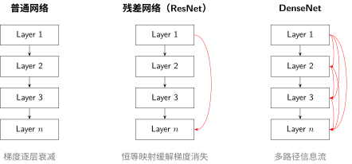
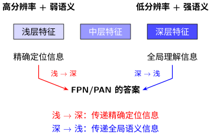

操控深度与连接：信息如何在网络中流动#
ResNet：深层网络的突破 揭露了一个惊人的事实：堆更多的层不一定更好，反而可能更差。根源在于梯度消失（Vanishing Gradient）——梯度在反向传播中逐层衰减，浅层收不到训练信号。
但 ResNet 只展示了跳跃连接这一种解法。本节从更根本的角度审视：信息如何在网络中流动？有哪些方式保证信息不丢失？
信息流动的三种通路#

串行链——梯度消失#
普通网络只有一个路径：Layer 1 → Layer 2 → … → Layer n。信息在串行中丢失，梯度在乘法中归零。这就是改造的本质：从"会用 CNN"到"会设计 CNN"中讨论的信息传不过去。
跳跃连接——信息捷径#
ResNet 的核心原理和梯度推导已在 ResNet：深层网络的突破 中详细介绍。从架构设计角度，我们提炼为一条核心原则：
每个模块都应该有一条"不做任何事"的退路。
数学上，\(y = F(x) + x\) 中的 \(+x\) 就是这条退路：
梯度可以沿跳跃路径直接回传（\(+1\) 项），不受残差分支影响
即使残差分支梯度消失，主梯度依然能保持（保底机制）
这解释了为什么 ResNet 能训练 100+ 层网络，而普通网络在 20 层就会退化。
密集连接——信息高速公路#
DenseNet 把跳跃连接推到了极致：每一层都连接到后面所有层。这创建了一个密集的信息网络，梯度有多条路径可以回传，几乎不可能完全消失。
三种连接方式的对比：
连接方式 |
参数效率 |
信息安全 |
适用深度 |
|---|---|---|---|
串行 |
高 |
低——梯度消失 |
< 20 层 |
跳跃连接 |
中 |
中——有退路 |
20 ~ 200 层 |
密集连接 |
低——每层输入很多 |
高——多重保障 |
任意深度 |
DenseNet 为什么不流行
既然密集连接的信息安全度最高，为什么现实中 ResNet 比 DenseNet 更常见？三个原因：
内存爆炸：第 100 层的输入 = 前 99 层所有输出的拼接，通道数线性增长，显存消耗巨大
特征冗余：很多层的特征非常相似，全部保留存在大量浪费——这违背了操控效率：如何在效果与速度间权衡 中讨论的压缩原则
跳跃连接已经够用：对于绝大多数任务，每隔 1~2 层一跳就足够保证梯度流通，不需要每层接所有层
DenseNet 的价值在思想的完整性而非实用性——它证明了"连接密度"是一个可以调节的维度，你可以根据计算预算在 ResNet 和 DenseNet 之间做折衷。
特征融合：不止是连接，而是对话#
跳跃连接解决的是一根弦上的信息传递。但更深层的问题是：不同深度的特征如何互相配合？
操控感受野：网络应该看多大 中介绍了 FPN——从感受野角度看，它让不同深度的层各自负责不同大小的目标。但从信息流动角度看，FPN 做了一件更重要的事：在深层语义和浅层细节之间建立对话。

设计心法：特征融合不是"把两个向量拼起来"，而是在不同抽象层次的特征之间建立双向信息流动——就像讨论问题时，从细节（浅层）和全局（深层）两个角度来回碰撞。
信息论视角：为什么连接方式决定了信息容量#
从信息论来看，连接方式直接决定了每层能访问多大的信息空间：
连接方式 |
第 \(i\) 层的输入 |
信息量 |
瓶颈 |
|---|---|---|---|
串行 |
\(h_{i-1}\) 一个来源 |
逐层压缩 |
任一层的丢失永久不可恢复 |
跳跃连接 |
\(h_{i-1} + x\) 两个来源 |
恒等映射保证下限 |
残差函数可能退化 |
密集连接 |
\([h_0, h_1, ..., h_{i-1}]\) 全部来源 |
任意层的特征都可复用 |
计算量大 |
FPN 融合 |
同尺度 + 上采样特征 |
跨尺度信息互补 |
上采样可能引入噪声 |
关键洞察：多一条连接，就多一个信息通道。信息的可恢复性随连接数增加而提升，但代价是计算量。
设计心法
操控连接的黄金法则：
每个模块都需要一条"退路"（恒等映射）——至少一层一跳
特征融合不是简单的拼接，而是不同抽象层次的双向对话
连接方式的选择取决于你的瓶颈：深度（加跳跃）还是尺度（做融合）
失败案例：过度连接的陷阱#
案例一：浅层网络强行加残差连接#
场景：你的网络只有 4 层，但每层都加了残差连接。
结果：
训练反而变慢了
最终准确率没有提升
为什么失败：
残差连接解决的是深层网络的梯度消失问题
4 层网络的梯度本来就能正常回传，\(\gamma^4\) 不会太小
额外的 \(+x\) 操作引入了不必要的计算，反而可能破坏特征的逐层变换
教训：残差连接是"药"，不是"保健品"。10 层以下不需要，20 层以上才考虑。
案例二：DenseNet 的内存爆炸#
场景：你设计了一个 100 层的 DenseNet，每层都接收之前所有层的输出。
结果：
训练时 GPU 内存溢出（OOM）
即使 batch size=1 也跑不动
为什么失败：
DenseNet 的特征图数量随深度线性增长
第 \(L\) 层需要存储之前 \(L-1\) 层的所有特征图
100 层 DenseNet 的特征图数量是普通网络的 50 倍
教训：密集连接的信息收益有边际递减效应，但内存消耗是线性增长的。DenseNet 更适合 20-40 层，而不是 100+ 层。
案例三：跳跃连接位置放错#
场景：你把 U-Net 的跳跃连接从"编码器→解码器同层"改成了"编码器最深层→解码器最浅层"。
结果：
分割边缘模糊
小目标检测不到
为什么失败：
U-Net 跳跃连接的核心是同尺度特征融合（28×28 对 28×28）
编码器深层是 4×4，解码器浅层是 56×56——尺度不匹配
上采样后的 4×4→56×56 丢失了精确定位信息
教训：特征融合的前提是空间对齐。跳跃连接不是"随便连"，而是需要精心设计融合点的位置。
案例四：FPN 中忘记横向连接#
场景：你实现了 FPN，但只做了自上而下的上采样，没有横向连接（lateral connection）。
结果：
小目标检测率提升不明显
整体 mAP 比标准 FPN 低 2-3 个点
为什么失败：
纯上采样的深层特征虽然语义强，但空间精度差（混叠效应）
没有横向连接引入的浅层高分辨率特征，小目标定位不准
这正是 FPN 论文强调 lateral connection 的原因
教训：FPN 的价值在于"双向融合"，不是单向传递。少了横向连接，就退化成普通的上采样金字塔。
决策树：如何选择连接策略#
网络深度?
├── < 10 层
│ └── 标准卷积堆叠即可，不需要特殊连接
│
├── 10-30 层
│ ├── 梯度消失问题? → ResNet 残差连接
│ └── 需要特征复用? → DenseNet 密集连接
│
└── > 50 层
├── 梯度消失严重? → ResNet + Pre-activation
├── 多尺度检测/分割? → FPN + 横向连接
└── 内存有限? → 分组密集连接或 Sparse DenseNet
核心原则：连接策略服务于信息流动问题。先诊断问题（梯度消失？信息丢失？多尺度？），再选策略，不要盲目堆叠连接。
下一步#
感受野决定了信息入口，连接决定了信息通路。但还有一个问题——通路畅通了，信息量也够了，网络知道该让哪些信息优先通过吗？
这就是操控注意力与长程依赖：信息该走哪条路要解决的问题。
贡献者与修订历史
查看详细修订记录
-
15d1b152026-05-03 - Heyan Zhu: docs(model-architecture-design): add new chapter on CNN architecture design methodology